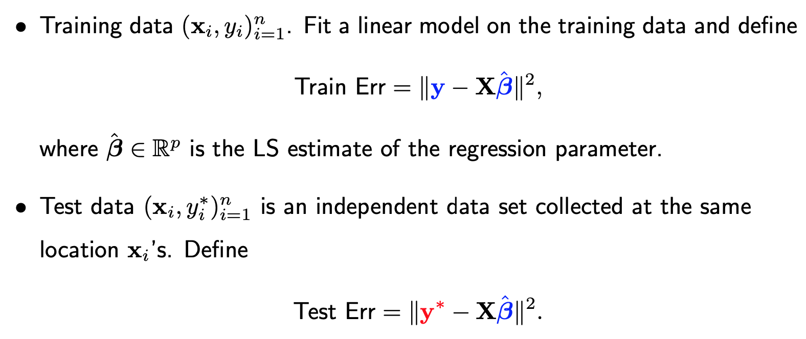
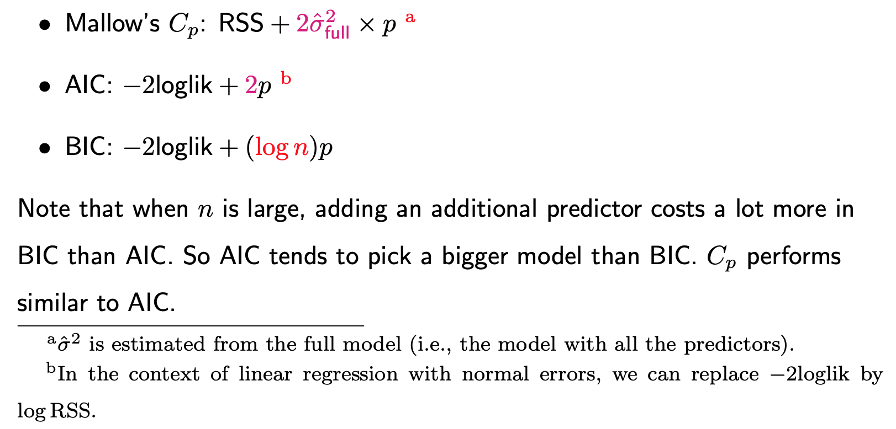

3.1. Subset Selection
3.1.1. Why Subset Selection
In modern statistical applications, there is often a vast array of potential predictors. Sometimes, the number of predictors p can exceed the sample size n. In certain applications, the primary objective is to pinpoint a subset of these predictors that have the most significant relevance to the response variable. For such tasks, variable selection becomes indispensable.
However, if our sole aim is to achieve accurate predictions without being concerned about the relevance of predictors in our regression model to Y, do we still need variable selection? Can adding more variables always lead to better predictions?
To delve deeper into this question, let’s embark on a theoretical exploration of the training and test errors in a linear regression model. Assume a training dataset (x_i, y_i) of size n. Using this data, we can fit a linear regression model, yielding a least square estimat, beta-hat. The training error can then be quantified as the squared difference between y and X times beta-hat, esssentially the residual sum of squares.
Now, consider a separate test dataset, gathered from the same locations x_i. In this case, the response, y-star_i will differ from y_i. The test error is the squared difference between y-star and X times beta-hat.
{kind=link}
It is crucial to note that whole both y_i and y-star_i are random and independent of each other. They are assumed to follow the same distribution which has a mean of f(x_i) and variance sigma-square. Another random term is beta-hat, whose randomness originates from the data y. This means that y and beta-hat are correlated (therefore, both colored in blue) but y-star (colored in red) and beta-hat are independent.
If we break down the expectations of both errors, they can be segmented into three parts (see the derivation here):
Unavoidable Error: This error persists even if we knew true function f. When the error terms are assumed to be independent with mean zero and variance sigma-square, the unavoidable error is equal to n times sigma-square.
Bias: This emerges if the true function f deviates from linearity or if, for instance, it involves three predictors, but we include only two in our model.
Dimensional Error term, \(p \sigma^2\): This is where things get intriguing. Its sign changes between training and test errors. The positive sign in the test error arises because of our reliance on the estimated beta instead of the true beta. The negative sign in the training error can be attributed to the positive correlation between beta-hat and y.
In conclusion, whether our primary objective lies in identifying a subset of relevant predictors or merely in enhancing prediction accuracy, it becomes evident that variable selection plays a crucial role.
3.1.2. Selection Criteria
How do we determine which variables to retain and which to discard?
This is a complex challenge. One might initially think of using p-values obtained from a linear regression model that includes all variables. In the resulting summary table, each variable is assigned a p-value. A common practice might be to use these p-values, setting a threshold (like 5%), and dropping variables with values exceeding this. But is this approach optimal?
The crux of the issue is that a variable’s p-value is contingent upon the other variables included in the model. Recall that the p-value for a variable assesses its conditional contribution in the presence of other variables in the model. If we remove any variable, the entire set of p-values could shift. Thus, simply using a snapshot of p-values from a full model is not recommended.
Instead of using p-values, we can assign a score to each model and then utilize an algorithm to determine the best one. Here, ‘model’ refers to a linear regression model containing a specific subset of variables. Imagine we have 10 non-intercept predictors. Excluding the intercept, which is always present, our subset of variables will be a combination of these 10 predictors. The potential models can be indexed using binary vectors, with a ‘1’ indicating the presence of a variable and ‘0’ its absence. So, the number of potential models equates to 2^10 or 1024. Even for just 10 predictors, the model possibilities exceed a thousand, underscoring the significance of search algorithms.
The score for model selection typically comprises two components:
A goodness of fit measure: often an increasing function of the residual sum of squares.
A complexity penalty term: often an increasing function of p, the number of non-intercepted variables.
The optimal model strikes a balance between these two terms. Too simple, and you might get a poor fit. Too complex, and you risk overfitting.
Popular scores for linear models include: Mallow’s Cp, AIC and BIC.
{kind=link}
AIC and BIC are versatile and can be applied to any statistical model. Although one might default to AIC and BIC, it’s useful to consider Mallow’s Cp, which aligns well with our theoretical understanding of training and test errors. The intent is always to minimize the test error, making Mallow’s Cp a robust choice for model selection, especially in the context of linear regression.
3.1.3. AIC vs BIC
Key Differences: Both AIC and BIC serve as model selection criteria, with the primary difference being in their penalty terms. The cofficients, specifically the ‘2’ in AIC and log(n) in BIC, can be thought of as the “cost” associated with adding an additional predictor to the model. As the sample size n grows, the cost incurred by AIC remains constant, while the cost for BIC increases.
Practical Implications: Given the distinct penalties, it’s common to see AIC and BIC favor different models when applied to the same dataset. Generally, AIC tends to select larger models compared to BIC. Mallow’s Cp, another criterion, aligns closely with AIC because its penalties are constant and don’t hinge on n. However, for many practical purposes, focusing on AIC and BIC might suffice.
Underlying Philosophies:
AIC: Aims to minimize the predictive error. It prioritizes accurate predictions even if it means including variables that might not necessarily be crucial.
BIC: Focuses on model parsimony and identifying truly relevant variables. It’s more conservative and emphasizes the exclusion of unnecessary predictors.
Two primary errors can arise during variable selection:
Excluding Signals: Leaving out variables crucial to y.
Including Noise: Incorporating variables that don’t significantly impact y.
While BIC considers both errors equally significant, their impacts on predictions differ. For instance, an irrelevant variable included in the model will have its influence diminish as the sample size increases, eventually moving its estimated coefficient towards zero. Conversely, excluding a relevant variable introduces a bias that persists regardless of sample size. As a result, AIC has a lighter penalty for adding new predictors.
In Conclusion: If your primary goal is prediction, lean towards AIC. But if you’re keen on selecting a model with only truly relevant features, BIC is your go-to.
3.1.4. Search Algorithms
Once you’ve chosen your model selection criteria, the next step is to employ a search algorithm to pinpoint the model with the smallest score.
Level-wise Search Algorithm
A popular method is the ‘level-wise search algorithm’, which works as follows:
Grouping Models by Size: Imagine there are p potential predictors. Models can then be grouped into p groups. For instance: The first group consists of models with just one predictor, the second group has models with two predictors, and so on, until the last group, which contains a model with all predictors.
Identifying Optimal Models Within Groups: Given that models within a group share the same size, their penalties are identical. Therefore, within each group, the model with the smallest residual sum of squares is considered optimal for that group. Thus, we can identify p best models, one for each group.
Evaluating Model Scores: Next, evaluate the score (residual sum of squares plus the penalty) of these p models and select the one with the lowest score.
The computational demands at step 2 can be immense, especially when p is large. Typically, this algorithm may not be advisable when p > 40.
Greedy Algorithms
For significantly large p values, employing greedy algorithms is beneficial. These algorithms search for the optimal model following a specific path.
Backward Search: Start with the full model and sequentially eliminate predictors until the score no longer improves.
Forward Search: Start with a null model (only the intercept) and sequentially add predictors until the score no longer improves.
Stepwise Algorithm: This is a blend of backward and forward methods. Start with the full model and move backward, but at each stage, in addition to removing predictors, consider reintroducing ones previously removed. The process halts when adding or removing predictors no longer improves the score.
The nature of greedy algorithms, given their specific path of search, means they may stop at a locally optimal solution rather than a globally optimal one. However, they’re faster and often yield solutions that are practically sufficient.
3.1.5. R/Python Code for Subset Selection
Rcode: [Rcode_W3_VarSel_SubsetSelection]
Python: [Python_W3_VarSel_SubsetSelection]
3.1.6. Variable Screening
Among the three model selection procedures — complete, forward, and backward — stepwise is the most computationally intensive. However, compared to forward and backward methods, stepwise is less prone to prematurely settling on a local optimum. The forward method doesn’t allow for the removal of variables once they’ve been added, even if they become less relevant as other predictors are included. Conversely, the backward method can’t reintroduce a predictor that might seem unimportant in the presence of other variables but could be beneficial if certain variables are removed.
In summary, if computational resources allow, we recommend the stepwise approach, beginning with the full model.
However, what if p (number of predictors) exceeds n (sample size)? Note that for any linear regression model with sample size n, adding more than n−1 non-intercepted predictors will result in a residual sum of squares of zero. Consequently, both AIC and BIC metrics become undefined, as the first term of AIC and BIC-being the logarithm of the residual sum of squares—equal negative infinity. Despite this, search algorithms can still be utilized by setting a cap on the model size. Under the stepwise procedure, for example, when your model reaches this threshold, you can only remove predictors, not add them.
When p exceeds n, directly using the full model as a starting point isn’t feasible. It’s recommended to use screening procedures to identify a starting model for the stepwise process. A simple screening approach is to rank predictors based on their correlation magnitude with the outcome variable Y and retain only the top K predictors (e.g., K = n/3). This method mirrors the process of executing individual simple linear regressions for Y against each predictor and ranking them based on p-values. Although this elementary procedure might overlook crucial variables, the subsequent stepwise process can potentially reincorporate them into the model.